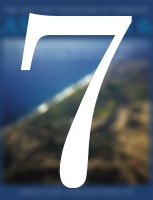

Leon Levy Expedition to Ashkelon
Daniel Master, Director
Edited by Nicholas Z. Schulte


- Leon Levy Expedition to Ashkelon
- Daniel Master
- Harvard University

- OCHRE Data Service
- Oriental Institute
- ochre.uchicago.edu